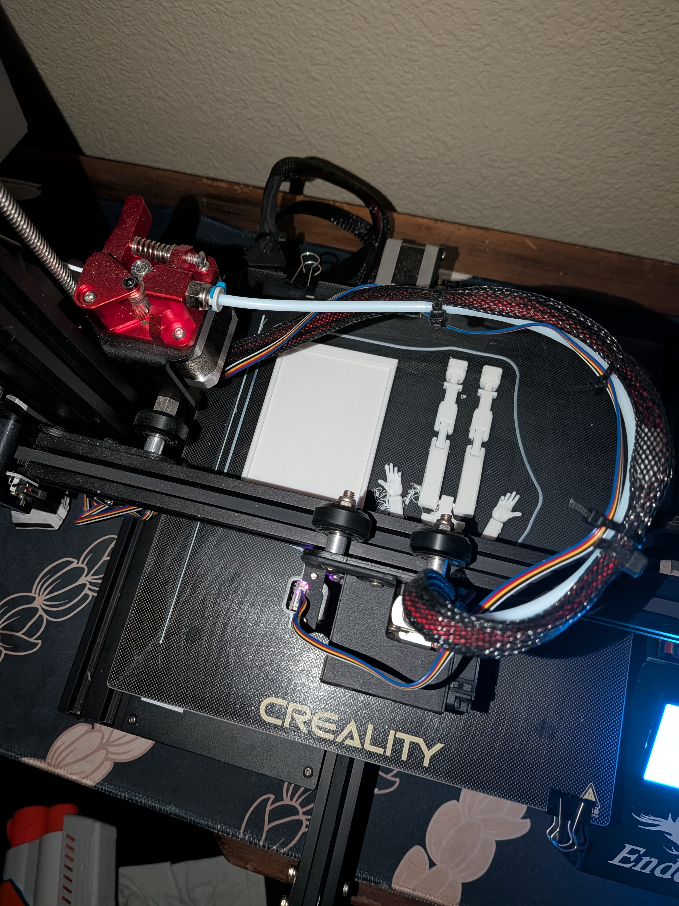
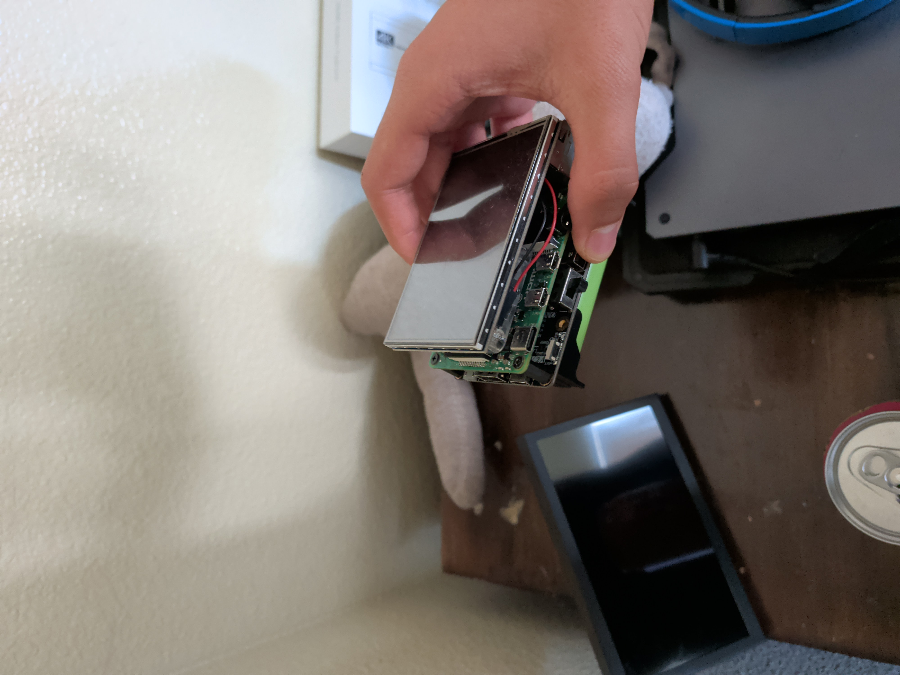

03 / talking indicator
my talking indocator for streaming, you can see it in action at my channel.

hey, its 3:00am and i made a funny guy and case for my phone.

i designed this "phone" and assembled it from start to finish., it uses chromeos and plays roblox at 60fps. i honestly consider it as a brick.
A cool render i made for my latest stream, its just an explosion in tilted towers
my talking indocator for streaming, you can see it in action at my channel.
My character escaping a digital world in its final seconds of life.

opened blender and made this diva. hes gonna be everywhere on this page.